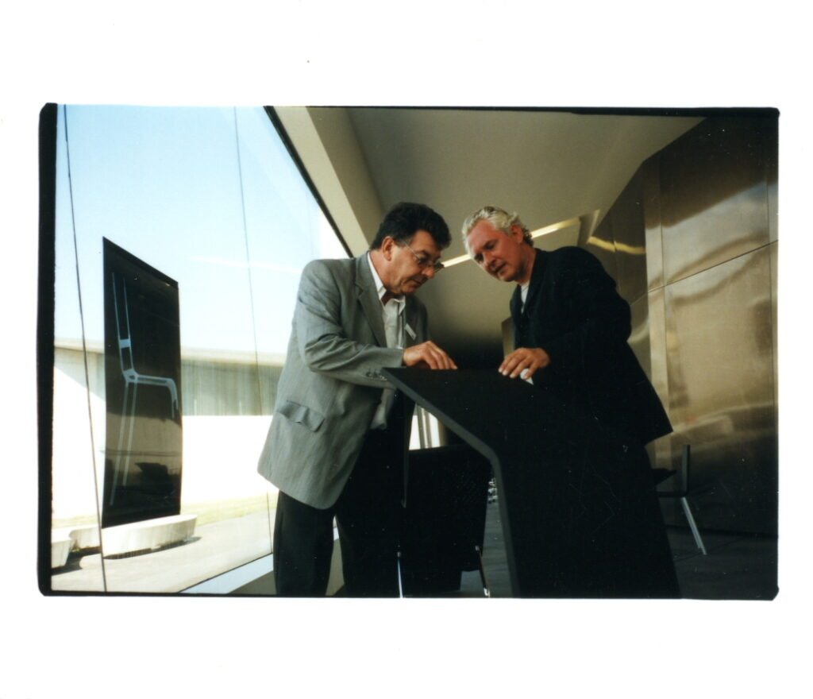
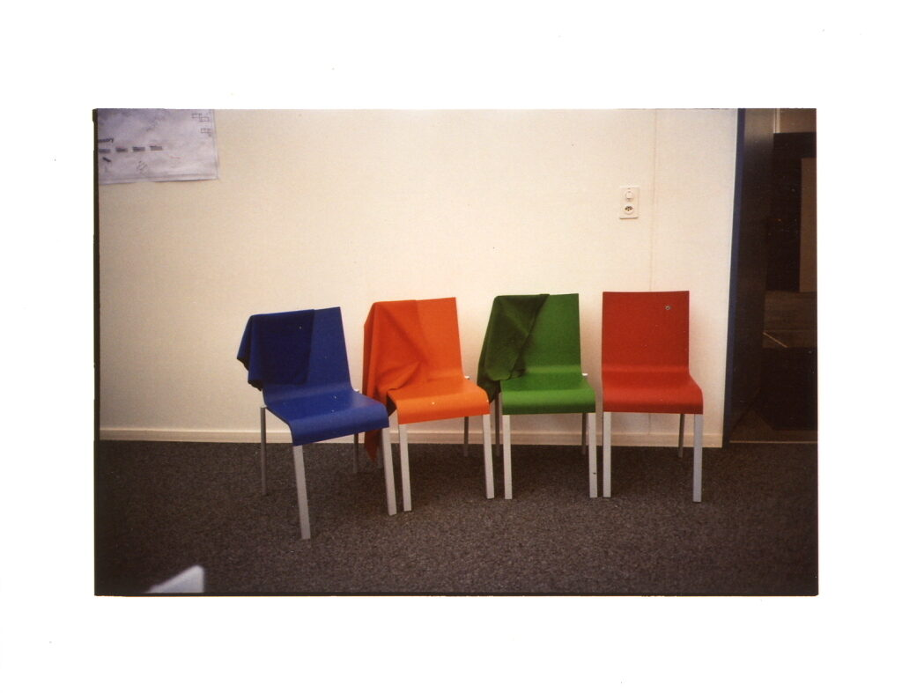
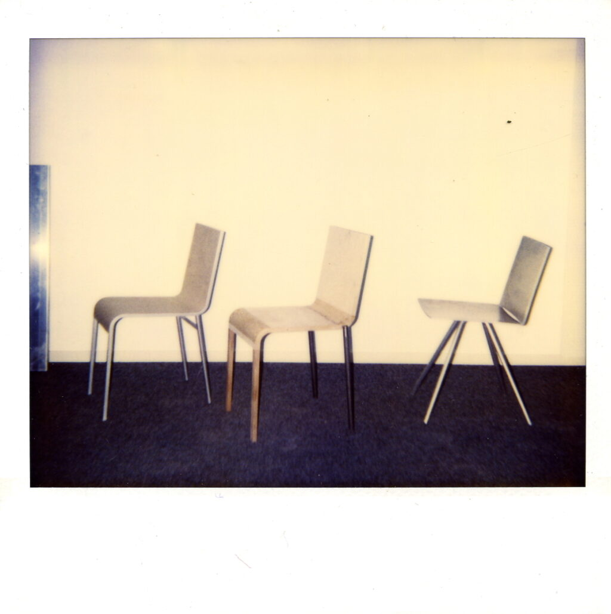
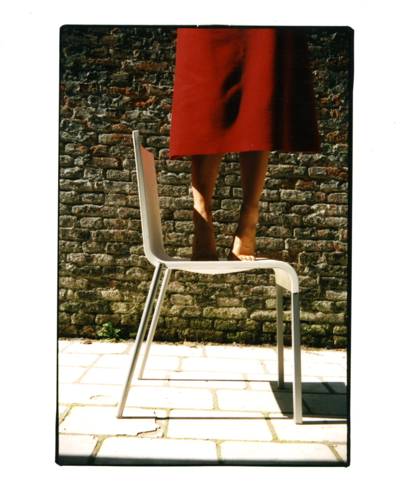
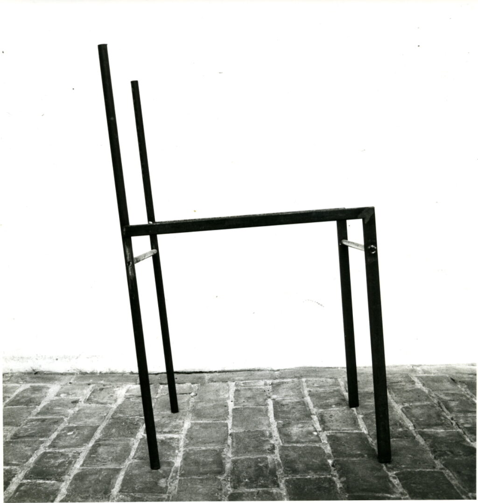
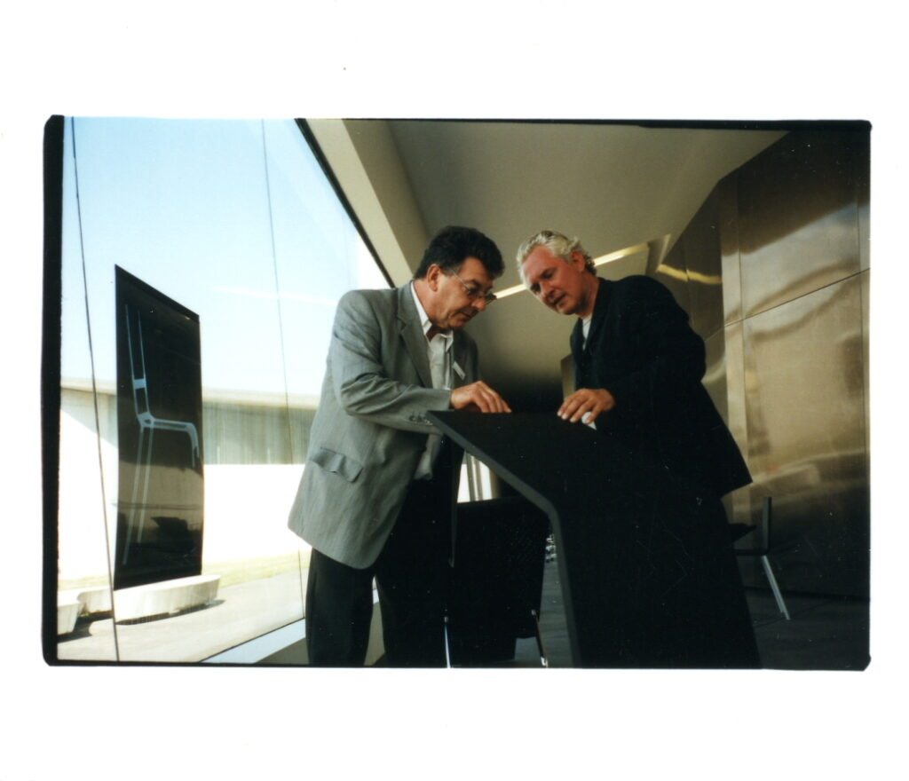
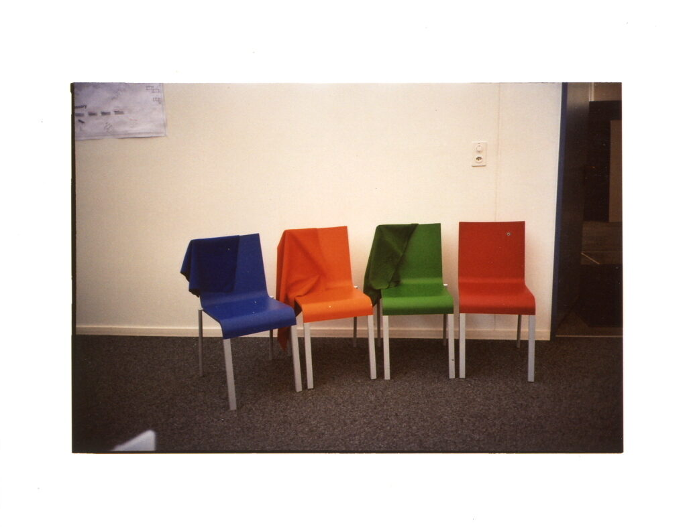
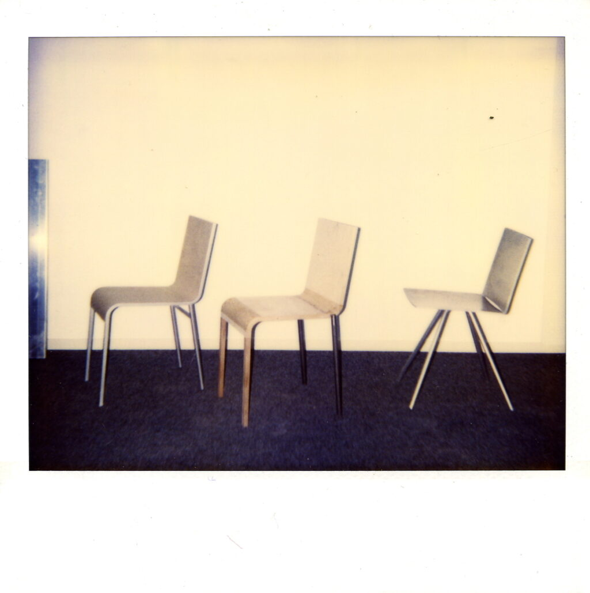
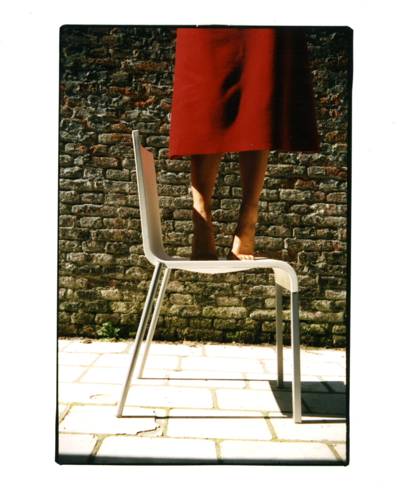
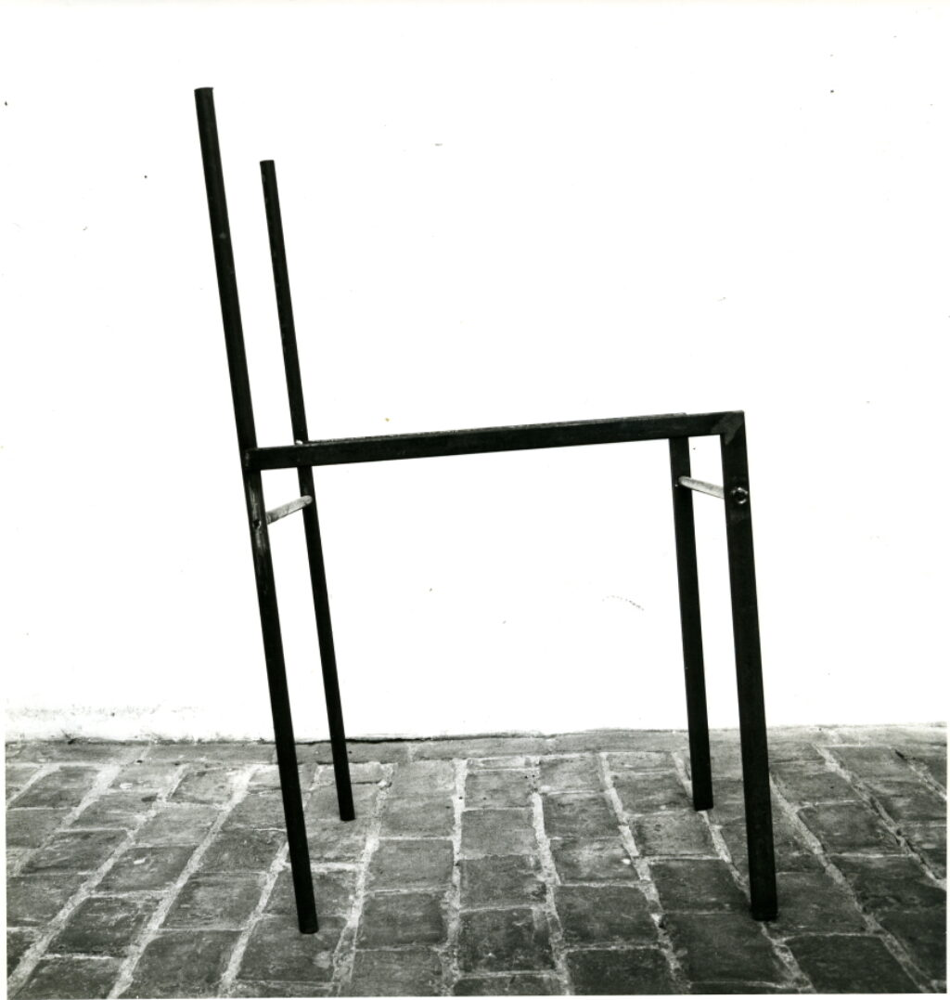

1.2.1.1.1 / 4 / 162
CN° I, CN° II, CN° III, .03, .04, .05, MVSCH00 en Folding Table
Dit is een bestanddeel van het archief van Maarten Van Severen met dossier, tekeningen op groot formaat (1 x CN° I, 4 x CN° II, een stoel die de overgang maakt van CN° II naar CN° III, en 8 röntgenfoto's van stoel .03, meer bepaald 2 samengestelde (aan elkaar gekleefde) foto's en 4 + 2 losse foto's (van onderdelen)), foto's (3 x CN° I, 45 x CN° II, en 34 x .03), dia's (9 x CN° II, 16 x .03, en 3 x .03 met armleuningen), videobanden (.03, .04 en MVSCH00), driedimensionale stukken (3 x CN° I, 46 x CN° II, 1 x CN° III, en 6 x .03) en gedigitaliseerde faxen (74).
Het behoort tot het archiefitem Projectdossiers zonder opdracht .
Dit archiefitem wordt bewaard in De Zwarte Doos.
Je kan het opvragen met deze depotnummers:
- D1, D2, D272
- M1, M9
- K1
- A1, A32, A33
- 3D12, 3D18, 3D33
- Omvang en medium
-
- 19 omslagen en 1 stuk
- 13 tekeningen op groot formaat
- 82 foto's
- 33 dia's
- 1 videoband
- 56 driedimensionale stukken
- Datering
- Datering beschrijving
 








